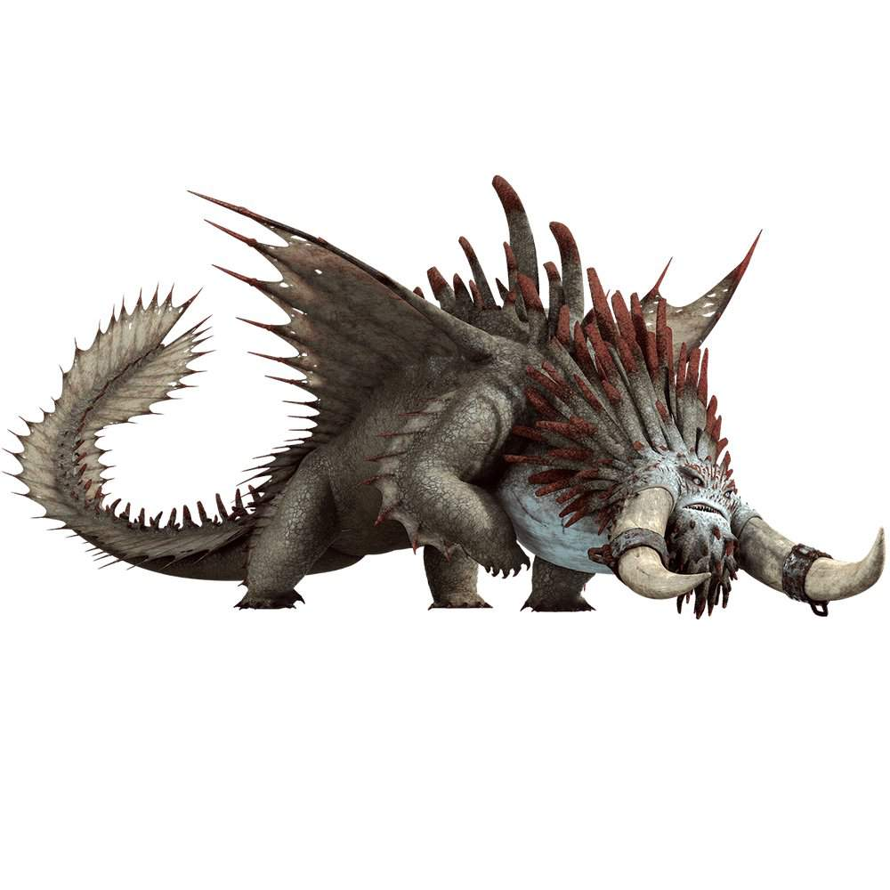
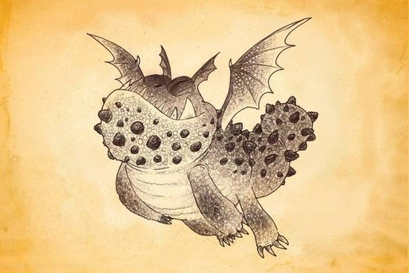
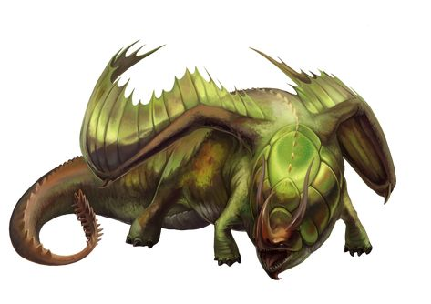

Dragões de Como Treinar o Seu Dragão

| Classes | Nomes | Fraqueza |
|---|---|---|
| Brasa | Pesadelo Monstruoso | Hipotermia |
| Marinha | Besta Implacável | Dragões da Classe Brasa |
| Boulder | Gronkel | Ruídos |
| Rastreadora | Chifre Estrondoso | Erva do Dragão |
| Afiada | Nadder Mortal | Ponto cego abaixo do nariz |
| Mistério | Armadura Asa | Estar sem sua armadura |
| Relâmpago | Fúria da Noite | Olhos vulneráveis |


